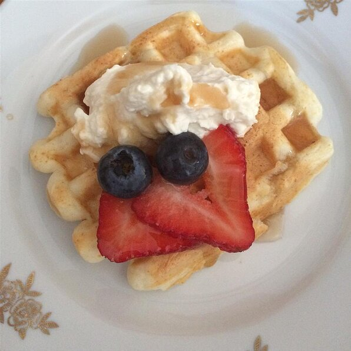

Classic Waffles

A lovely, crispy waffle perfect for the morning.
Ingredients
-
2 cups all-purpose flour
-
1 teaspoon salt
-
4 teaspoons baking powder
-
2 tablespoons white sugar
-
2 eggs
-
1 and half a cup of warm milk
- 1/3 cup butter, melted
-
1 teaspoon vanilla extract
Directions
Step 1
-
In a large bowl, mix together flour, salt, baking powder and sugar; set aside. Preheat waffle iron to desired
temperature.
Step 2
-
In a separate bowl, beat the eggs. Stir in the milk, butter and vanilla. Pour the milk mixture into the flour mixture;
beat until blended.
Step 3
-
Ladle the batter into a preheated waffle iron. Cook the waffles until golden and crisp. Serve immediately.
Home